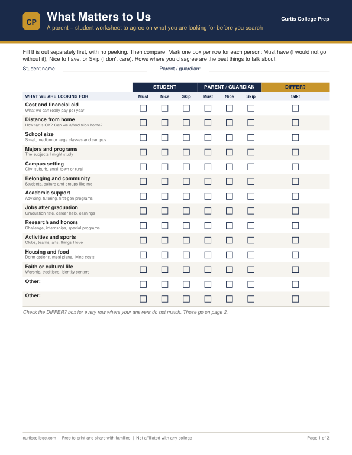
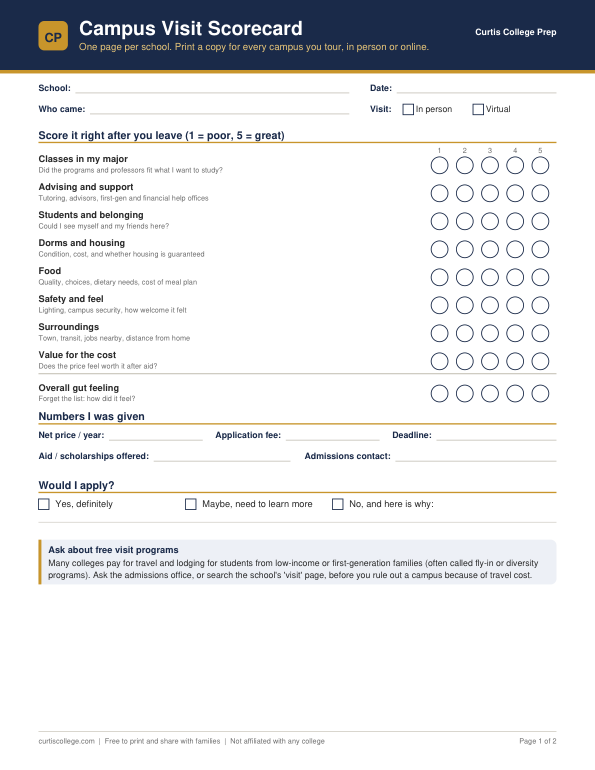
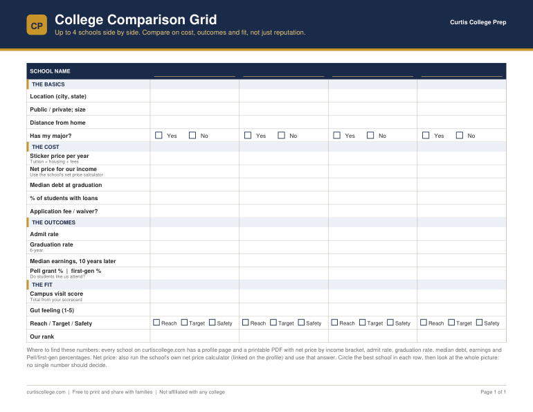

Printable worksheets to help your family choose schools together, no counselor required. They are free to download, print, and share. Pair them with the school profiles on this site: each profile PDF has the numbers these worksheets ask for.

2 pages · Parent + student
Before you search, each of you marks what you must have, would like, or can skip across 12 things like cost, distance, size and support. Then compare, find where you differ, and pick your top 5.
Download free PDF
2 pages · Print one per school
Score every tour in minutes, jot down the cost numbers you were given, and tick off the questions worth asking, including the ones about financial aid and support that tours skip.
Download free PDF
1 page · Landscape · 4 schools
Put up to four schools side by side on cost, outcomes and fit. Fill it from the numbers on each school's profile page.
Download free PDF